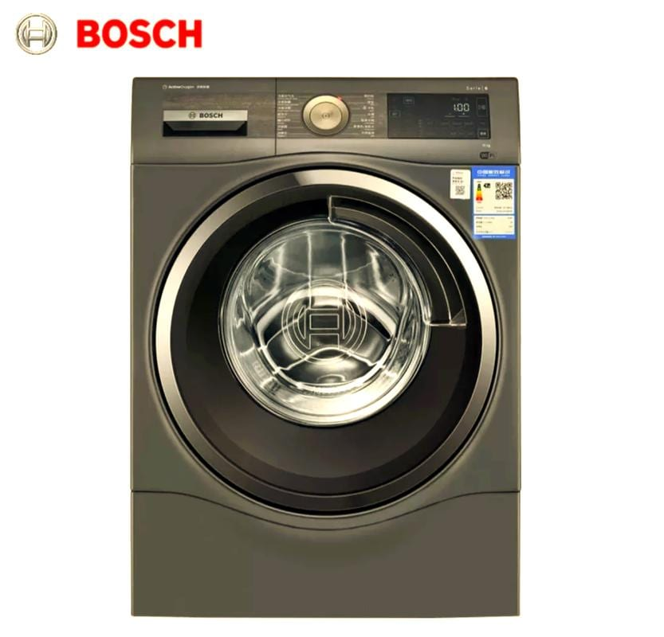

博世 WGA254 洗衣机

博世 4 系滚筒洗衣机，约 10kg 容量配合衣量自检智能调节水量与时间，快洗程序兼顾效率与洁净。除菌液洗与筒自洁守护洗衣健康，运行稳定噪音低，德系品控让它成为很多家庭的十年之选。
客观评测
WGA254 属于博世 4 系，约 10kg 洗涤容量、BLDC 变频电机、脱水转速约 1200rpm，能效一级。实测衣量自检对少量衣物的水电节省明显，棉织物程序洗净力稳定，除菌液洗程序在常温下即可完成除菌漂洗，对不耐高温的衣物友好。15/30 分钟快洗对轻污衣物效率不错，洗涤噪音约 48dB（约），机身稳定性好。脱水转速不算高，超厚衣物含水率略高，但整体调校成熟，长期使用的稳定性有口碑。
主观点评
选它的理由很朴素：一台打算用上十年的洗衣机，稳定比花哨重要。衣量自检让日常洗衣几乎不用思考，倒点洗衣液按开始就行；除菌液洗在换季与流感季特别让人安心。它长得低调，功能也不追新，但每次平稳安静地洗完一桶衣服，都觉得这钱花得踏实。对务实家庭来说，这种无存在感的可靠正是最好的品质。
优点与不足
- 衣量自检智能调节水电，日常使用省水省心
- 除菌液洗程序适配后疫情时代的健康需求
- 快洗程序实用，夏天轻薄衣物随洗随穿
- 约 1200rpm 脱水转速中规中矩，厚重衣物含水率稍高
- 外观设计保守，功能界面偏传统
参数规格
| 类型 | 滚筒洗衣机（4 系） |
|---|---|
| 洗涤容量 | 约 10 kg |
| 电机 | BLDC 变频电机 |
| 转速 | 约 1200 rpm |
| 能效 | 一级能效 |
| 程序 | 棉织物、混合、羽绒、羊毛、筒自洁等 |
| 除菌 | 除菌液洗程序、高温洗涤 |
| 快洗 | 15 / 30 分钟快洗程序 |
| 水位 | 衣量自检，自动调节水量与洗涤时间 |
| 智能 | 部分版本支持家居互联 |
| 噪音 | 洗涤约 48 dB(A)（约） |
| 内筒 | 不锈钢内筒 |
| 尺寸 | 约 598 × 590 × 848 mm（约） |
| 重量 | 约 75 kg（约） |